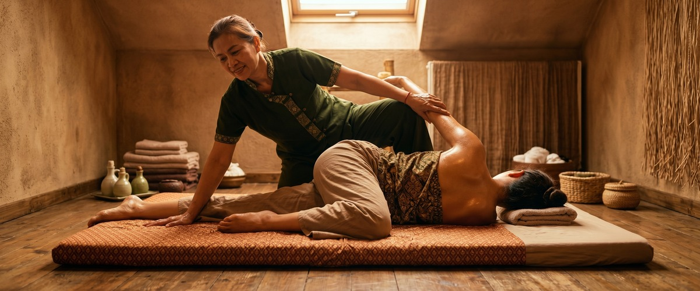
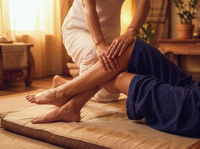
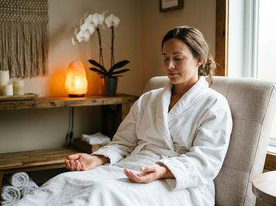

If you have ever wanted the benefits of a yoga class without doing any of the work yourself, Thai yoga massage might be exactly what you have been looking for.

Often described as "passive yoga," this ancient practice involves your therapist guiding your body through assisted stretches, joint movements, and acupressure sequences. You simply breathe, let go, and allow the movement to happen.
At Glasgow Thai Massage, it is the kind of treatment that leaves clients genuinely surprised by how different they feel walking out compared to when they walked in.
Most people arrive expecting something like a Swedish or oil massage, where a therapist works on the muscles while you lie still. Thai yoga massage is a different experience entirely.
You stay fully clothed on a floor mat, and the therapist uses their hands, forearms, elbows, and even feet to move your body through positions that mirror yoga poses.

The technique works along the body's sen energy lines — internal pathways that, when stimulated, are understood in traditional Thai medicine to support circulation, flexibility, and the free flow of energy.
Acupressure along these lines, combined with assisted stretching, creates a treatment that tackles both deep muscle tension and the structural stiffness that builds up over time.
You can book a session online if you want to experience it for yourself before reading any further — but if you want to understand what is actually happening during the treatment, read on.
One of the most effective stretches in a traditional Thai massage session is the supine spinal twist. You lie on your back, and the therapist rotates your lower body to one side while holding your shoulder steady. This creates a long, controlled rotation through the lower and mid spine.
For anyone who spends long hours at a desk, this stretch targets the rotational stiffness that builds up without you noticing. The muscles alongside the spine get a sustained release that is hard to achieve through exercise alone.
Many clients find that lower back pain they have had for weeks begins to ease after just one session.
Tight hip flexors are one of the most common causes of lower back pain and poor posture. They are almost universal in people who sit for most of the day.
In Thai yoga massage, the therapist uses a supported lunge to create a deep stretch through the front of the hip and thigh. Because the stretch is passive, your muscles do not need to engage to hold the position.
This allows the hip flexors to relax in a way they often cannot during active stretching. The therapist can hold and slowly deepen the position as the tissue releases. Over a course of sessions, clients often notice better posture and a clear reduction in that dull, persistent ache across the lower back.
One of the most striking moments in a Thai massage session is when the therapist lifts the client into a supported backbend. They often use their knees against the client's back as a support point.
This mirrors the yoga cobra or sphinx pose and targets the mid spine, chest, and shoulder area. For people who carry tension in the upper back and shoulders, this technique creates a release that is hard to replicate any other way.
The chest opens, the shoulders draw back, and the mid spine gets the space that hours of forward-leaning posture have taken away. It can feel intense the first time, but the release afterwards is clear and real.
Thai massage includes a range of leg stretches that open the hamstrings, calves, and hip rotators. Working with the client lying on their back, the therapist lifts and extends the leg, adjusting the angle and depth based on what the body allows in that moment.
These stretches are especially useful for sports massage clients recovering from training or dealing with tightness from running, cycling, or gym work.
The slow, sustained nature of the stretches gives the nervous system time to register safety, allowing the muscle to lengthen rather than tighten in response. Combined with acupressure along the sen lines that run through the legs, the effect on range of motion can be significant.
Traction means gently pulling a joint to create space between the surfaces. It is used throughout Thai yoga massage but is especially noticeable in the shoulder and arm sequences.
The therapist takes the arm through supported circles and extensions, lengthening the tissue around the shoulder joint and creating gentle traction through the neck.

For anyone carrying ongoing neck and shoulder tension — whether from stress, posture, or repeated movement — these techniques address the source of the tightness rather than just the surface symptoms.
It is one of the reasons Thai massage is often recommended for people who have tried other treatments and found only short-term relief.
Thai yoga massage works because it treats the body as a connected system, not a set of separate problems. The stretching, acupressure, and traction all build on each other throughout a session.
Most clients leave feeling both deeply relaxed and noticeably more mobile. If you are based in Glasgow city centre and want to find out what that feels like, you can book your appointment online and get started.
Thai yoga massage is the same core practice as traditional Thai massage. The term "yoga massage" highlights the assisted stretching element, where the therapist guides your body through positions similar to yoga poses. All traditional Thai massage sessions include this, so the two terms are often used interchangeably.
What sets it apart from oil or Swedish massage is that you stay fully clothed, no oils are used, and the focus is on movement and acupressure rather than soft tissue work alone.
Yes, and this is one of the most common misconceptions people have. You do not need to be flexible to benefit. The therapist works within whatever range of motion your body currently has and gently encourages it to extend.
Because the stretches are passive, your muscles do not need to work to hold a position. Even people who consider themselves very stiff tend to notice real improvement in mobility after a session.
Many cases of back pain are linked to tight hip flexors, limited spinal rotation, or compressed joints. Thai yoga massage addresses all of these directly.
The spinal twist and hip-opening techniques release the muscle tension that pulls the spine out of alignment. Traction techniques create space in joints that have been compressed by gravity and poor posture. For ongoing lower back pain, a course of regular sessions often brings more lasting relief than occasional treatments.
Comfortable, loose-fitting clothing works best. You will stay fully clothed throughout, and the therapist needs to move your limbs freely. Anything stretchy or relaxed in fit is ideal.
Gym clothes, loose trousers, and a t-shirt are all good choices. Avoid tight jeans or structured clothing that would limit movement during the stretches.
For clear and lasting gains in flexibility and range of motion, most therapists suggest starting with a session every one to two weeks for the first couple of months. This gives the body time to adapt between sessions rather than returning fully to its starting point before the next treatment.
Once you have built a foundation, monthly sessions are often enough to maintain the gains and stop tension from rebuilding.